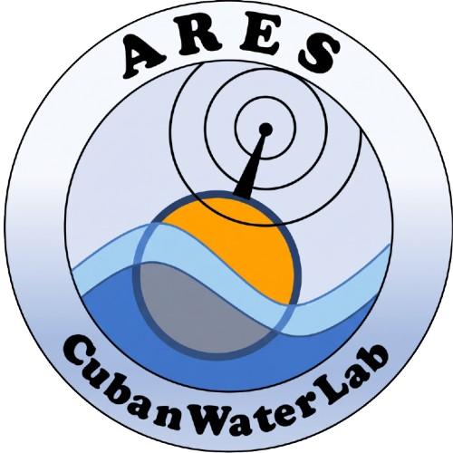
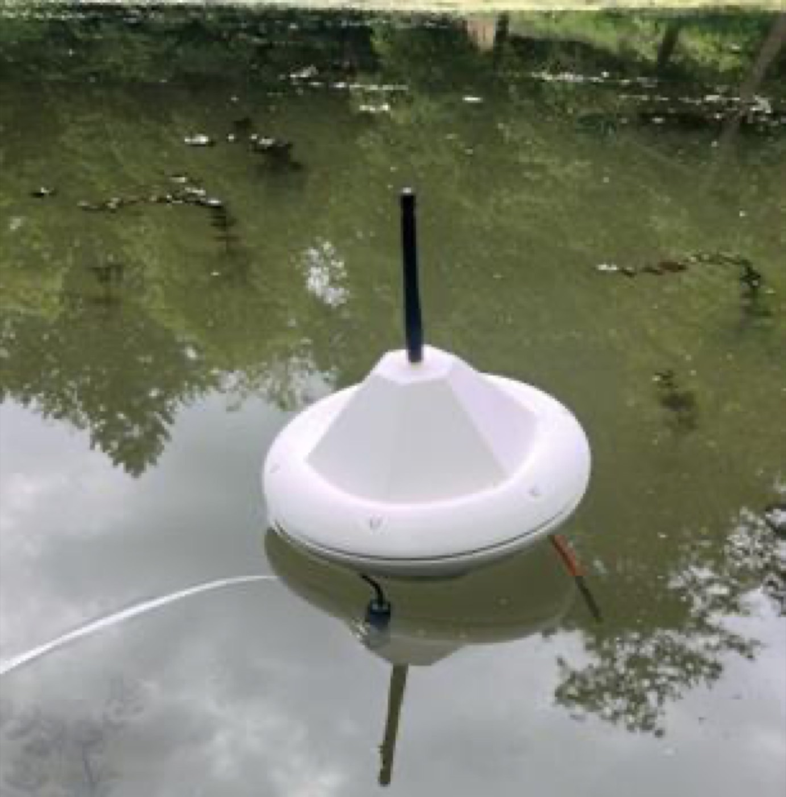

CubanWaterLab ESENFR
Suivi in situ de la qualité de l'eau dans les baies cubaines
Notre objectif est de créer et de promouvoir l'usage d'outils scientifiques : cinq années de coopération entre partenaires cubains et belges pour doter les chercheurs et les communautés côtières cubaines d'instruments de suivi environnemental.
Ce que se propose CubanWaterLab, qui y participe et qui le rend possible.
Voir la page → 02 · JournalLa chronologie complète, de juillet 2024 à juin 2026, avec photos et faits réels.
Voir la page → 03 · CommunautéLe travail mené avec les pêcheurs et les habitants de Casablanca.
Voir la page → 04 · ÉquipeCoordination, doctorants, recherche associée et collaborateurs.
Voir la page → 05 · RésultatsArticles, communications, prix et diffusion.
Voir la page → 06 · GalerieInstruments, canal à houle, ateliers et travail de terrain.
Voir la page → 07 · RapportsLes rapports trimestriels et annuels soumis pendant le projet.
Voir la page → 08 · ContactComment joindre l'équipe et les institutions qui soutiennent le projet.
Voir la page →